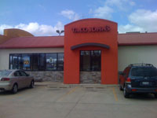

Reunited
Posted April 15 2008 5:02PM by Michael
On my way back to campus on Sunday, my parents and I made a stop at arguably my favorite fast food restaurant of my previous 21+ years: Taco John's. What made this all the more memorable was that this was the same Taco John in Bourbannais that we stopped at on my way to move in my freshmen year. Somehow there is apparently two Taco John's literally down the road from each other, yet those are the only Taco John's in the entire trip. How we only stopped there one time in between that first trip and this most recent one is a baffling question my mom brought up.
I obviously ordered my customary 'Six pack and a pound', referring to six hard shelled tacos and two servings of potato oles (deliciously seasoned tater tots for the uninformed). I politely passed my second serving of oles to my parents, and then proceeded to finish the rest of my food.
As we pulled away, only one thought entered my mind: 'Will I ever see you again?'